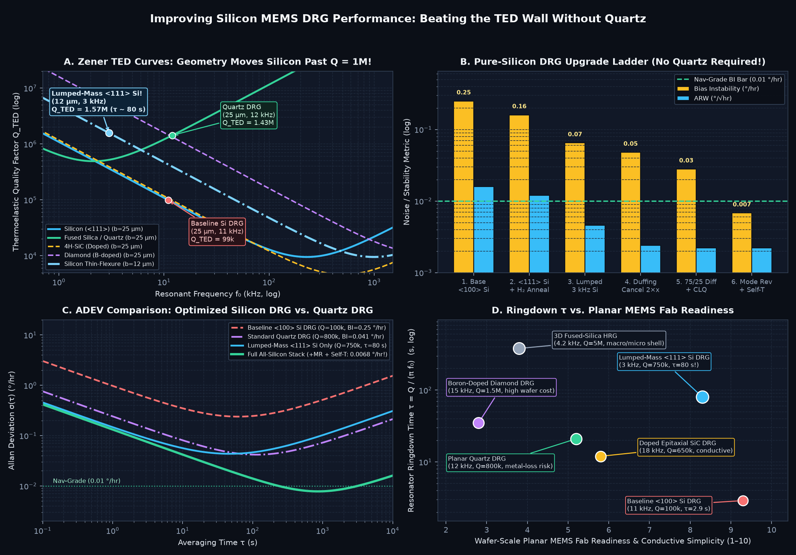

Why single-crystal Silicon is far from dead for navigation-grade DRGs, how moving off Zener's TED Debye peak pushes pure Silicon past Q = 750k and τ = 80 s, and an honest trade table comparing Silicon, Quartz/Fused Silica, SiC, and Boron-Doped Diamond.
Emphatically NO. Some of the best planar MEMS DRGs ever demonstrated (sub-0.01 °/hr lab demos from Stanford, JPL, and Boeing) are single-crystal Silicon.
Quartz / fused silica wins primarily on one material parameter — lower Thermoelastic Damping (TED) (α ≈ 0.55 vs. 2.6 ppm/K) — which makes it the undisputed king of 3D shells (HRG / micro-HRG). For planar multi-ring DRGs, however, insulating quartz/silica is harder to deep-etch and requires conformal metallization inside micron-wide trenches (where metal surface loss can erase much of the theoretical Q advantage!).
The Silicon Superpower: Using <111> isotropic Silicon + lumped-mass low-f0 thin flexures (b = 12 μm, f0 = 3 kHz) slides Silicon far down the isothermal flank of Zener's TED curve to QTED = 1.57M (net Q ≈ 750k, τ ≈ 80 s!) — while keeping conductive DRIE, wafer-level Epi-Seal vacuum, and built-in PLLAdj self-thermometry.
Drag ring width b and frequency f0 to move Silicon off Zener's TED loss valley — notice how QTED ∝ 1/(f0·b²) in the isothermal left flank lets pure Silicon match or beat Quartz in ringdown time τ!
QTED(f0, b) curves for all 4 materials at your chosen beam width b. Glowing dot = active material & f0; dashed line = Qanchor+surf vacuum/anchor ceiling.Hang large silicon mass blocks on thin (10–15 μm) flexural rings to lower f0 from 11 kHz → 2–4 kHz. Pushes Silicon far into the isothermal TED flank while boosting both meff and ringdown time τ = Q/(πf0).
Standard <100> wafers have ~30% in-plane elastic anisotropy. Switching to <111> silicon gives perfectly isotropic in-plane stiffness (like glass!), while high-temp H2 annealing smooths DRIE scallops to slash surface loss and gap mismatch δ.
Scale SOI device thickness (100 → 300–500 μm) and diameter (4 → 10 mm) for 4–10× higher modal mass. Balance positive mechanical hardening against negative parallel-plate electrostatic softening (β3,mech + β3,elec ≈ 0) to double linear xmax.
If staying on lower-cost <100> wafers, the n=3 wineglass mode (6 antinodes) is naturally frequency-degenerate by crystal symmetry, rejects n=1 vibration better, and decouples well from central anchor stress.
Keep Axis 1 and Axis 2 symmetric (75% Pickoff / 25% Forcer on each, on-die combined + 4-quadrant differential) so you can run Mode Reversal — chopping Silicon's residual anisodamping bias Δ(1/τ) to AC zero!
Silicon's strong −30 ppm/°C TCF is a superpower when measured via a 40-bit NCO PLL (0.006 °C RMS live on our ZUBoard 1CG!). Zero-lag internal die thermometry + stress-decoupled anchors crush long-τ thermal RRW.

model/plot_silicon_drg_paths.py: (A) Exact Zener QTED curves showing 12 μm / 3 kHz Silicon reaching 1.57M, (B) Pure-Silicon 6-stage ladder crossing 0.01 °/hr, (C) ADEV comparison vs. standard Quartz DRG, and (D) Ringdown time τ vs. wafer-scale MEMS fab readiness.| Material | Conductive? (No Metal Loss!) | Typical DRG Q & τ | TCF (ppm/°C) | Key Strength | Main Hurdle |
|---|---|---|---|---|---|
| <111> Lumped-Mass Si | Yes (doped Si) | 500k–1M · 30–100 s |
−30 (great self-T!) |
Mature DRIE, Epi-Seal vacuum, lowest cost, huge τ | Needs lumped-mass design to avoid TED peak; stronger TCF |
| Fused Silica / Quartz | No (needs metal coat) | 800k–5M · 20–400 s |
+80 (fused) / ~0 (XTAL) |
52× lower TED; undisputed king of 3D HRG shells | Harder deep etch; sidewall metallization adds surface damping |
| Doped Epitaxial SiC | Yes (doped SiC) | 400k–800k · 10–25 s |
−15 |
2× stiffer, high shock & radiation hardness, conductive | Slower/harder plasma etching & pricier epi wafers than Si |
| B-Doped Diamond | Yes (B-doped) | 1M–2M+ · 25–60 s |
−5 |
Ultra-low TED + 12× higher thermal diffusivity + conductive | Expensive wafers & niche MEMS foundry ecosystem |